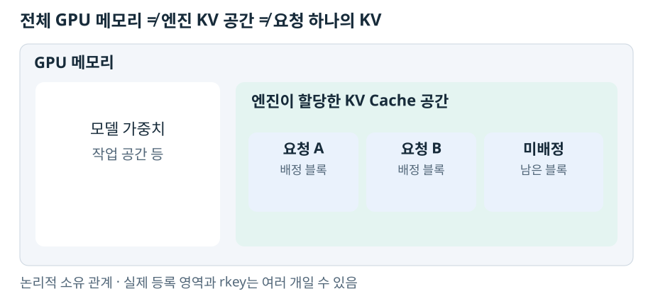

Decode 엔진이 Prefill 엔진의 KV를 읽으려면 읽을 메모리와 접근 방법을 알아야 한다. 요청 응답에 보이는 블록 ID와, RDMA가 사용하는 rkey는 그 과정의 서로 다른 층에 속한다.
먼저 ‘전체 KV 공간’과 ‘한 요청의 KV’를 나눈다
vLLM은 엔진이 사용할 KV Cache 저장 공간을 GPU 메모리에 할당한다. 그 안의 블록을 여러 요청에 배정한다. 모델 가중치와 KV Cache는 다른 데이터다.

그림은 논리적인 소유 관계다. 실제 KV는 여러 레이어·K/V 텐서·할당 영역으로 나뉠 수 있다. ‘KV 전체 공간’이라는 표현이 반드시 하나의 연속된 메모리 영역을 뜻하지는 않는다.
rkey는 요청 비밀번호가 아니다
RDMA에서는 메모리 영역을 등록하여 원격 접근에 필요한 권한과 장치 정보를 마련한다. rkey는 원격 접근에 사용하는 키다. 접근 주소·범위·권한과 함께 의미를 가지며 사용자 신원을 증명하는 로그인 키는 아니다. rdma-core의 메모리 등록 API.
| 값 | 가리키는 것 | 가리키지 않는 것 |
|---|---|---|
| 엔진 ID | 특정 실행 중인 엔진 | 사용자 인증 자격 |
| 블록 ID | 그 엔진의 KV 저장 구조 안의 논리적 블록 | 전역 메모리 주소나 rkey |
| 등록 영역·rkey | backend가 원격 접근할 수 있는 메모리 영역과 접근 키 | 반드시 요청 하나 전용인 권한 |
따라서 ‘Prefill 서버 하나당 rkey 하나’도 ‘요청마다 rkey 하나’도 일반 규칙이 아니다. 등록을 레이어·텐서·할당 단위로 나누면 여러 키가 생길 수 있다. 장치·backend 구성에도 영향을 받는다.
큰 KV 영역을 등록했다면 그 영역에는 여러 요청의 블록이 포함될 수 있다. 그렇다고 키 하나가 GPU 메모리 전체를 열어 주는 것은 아니다. 등록 범위와 허용된 연산의 경계가 있고, 요청별 접근 통제는 별도 문제다.
키를 사용자가 vLLM 옵션으로 넣는가
보존된 구현에서는 사용자가 rkey 문자열을 만들거나 요청 JSON에 넣지 않는다. 다음 순서로 처리한다.
- 엔진이 KV 저장용 버퍼를 할당한다.
- vLLM connector가 NIXL에 버퍼의 메모리 descriptor를 등록한다.
- 선택된 backend가 필요한 등록·접근 정보를 만든다. RDMA backend라면 이 과정에 RDMA 메모리 등록과 원격 키 정보가 포함된다.
- NIXL은 원격 agent가 사용할 수 있는 직렬화된 메타데이터를 제공한다.
- Decode가 Prefill의 메타데이터 endpoint에 먼저 질의하고, Prefill이 반환한 접근 정보를 검증해 원격 agent를 등록한다.
- Decode가 요청의 원격 블록 ID를 자기 수신 블록과 대응시키고 NIXL
READ를 준비·시작한다. - KV는 Prefill → Decode 방향으로 이동한다. 전송 시작과 완료는 다르므로 완료 상태와 필요한 수신 후 처리를 확인한 뒤 해당 KV를 계산에 사용한다.
NIXL의 일반적인 수명 주기도 메모리 등록 → 메타데이터 교환 → 전송 순서다. 메타데이터를 교환했다고 KV payload가 이미 복사된 것은 아니다. NIXL Quick Start.
실제 설치된 NixlConnector worker 소스 (로컬 보존 자료: research/distributed_runtime_cross_node_transport/runs/archive-a/full-20261010/source/distributed/kv_transfer/kv_connector/v1/nixl/base_worker.py)에는 register_memory, get_agent_metadata, _nixl_handshake, add_remote_agent 호출이 보존되어 있다. _nixl_handshake는 GET_META_MSG를 보내고 응답을 받는다. 엔진 ID가 예상과 일치하는지 확인한 뒤 원격 메타데이터를 추가한다. 이는 엔진 일관성 검사이지 사용자 인증은 아니다.
그 뒤의 pull worker (로컬 보존 자료: research/distributed_runtime_cross_node_transport/runs/archive-a/full-20261010/source/distributed/kv_transfer/kv_connector/v1/nixl/pull_worker.py)는 make_prepped_xfer("READ", ...)와 transfer(handle)로 비동기 읽기를 시작한다. HTTP에 담긴 KV 위치 정보와 이 메모리 접근 메타데이터의 차이, 완료·블록 회수는 Pull의 수명 주기에 정리했다.
매 요청마다 키를 새로 주고받는 것은 아니다
이미 연결한 원격 엔진의 agent 정보는 재사용할 수 있다. 매 요청에서는 그 요청의 블록과 토큰 범위가 달라진다. 엔진이 재시작하거나 메모리 등록이 사라지면 예전 메타데이터가 유효하다고 가정할 수 없다.
TCP backend에서는 하드웨어 RDMA의 rkey로 NIC가 원격 메모리를 읽는 구조가 아니다. 다만 UCX API 내부에는 transport를 추상화한 remote-key 객체나 원격 읽기 이름이 남아 있을 수 있다. rkey라는 내부 객체명이나 ucp_get 호출만으로 RDMA 사용을 확정하지 않는다.